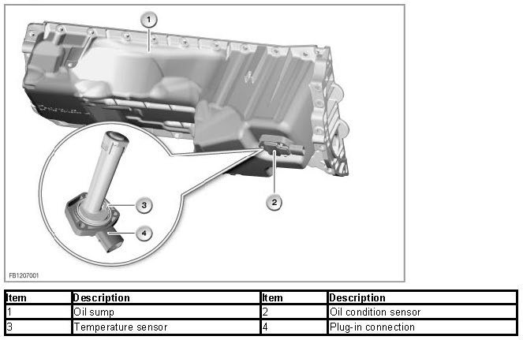
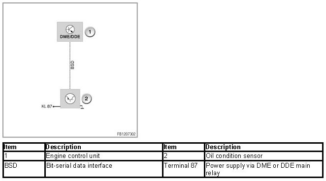
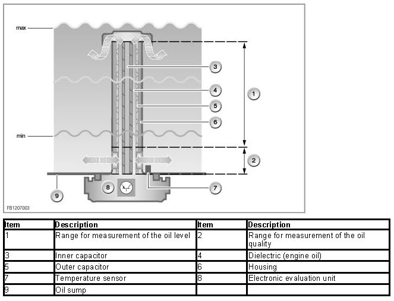
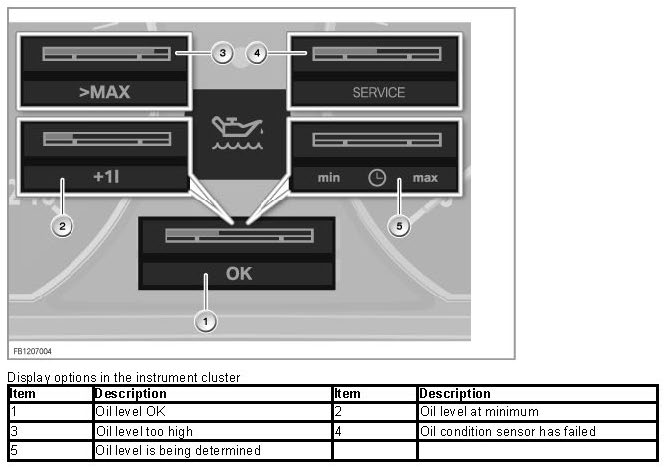
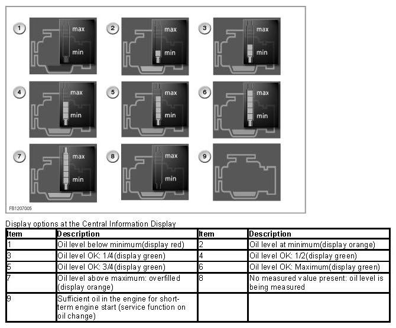

Oil Condition Sensor
Oil Condition Sensor
Oil condition sensor
The oil condition sensor increases the function range of the thermal oil level sensor. The oil condition sensor measures the following variables:
- Engine oil temperature
- Oil level
- Engine oil quality
The engine management system evaluates these measurements. With the oil condition sensor, the electrical properties of the engine oil are also determined. These properties alter when the engine oil shows signs of degradation and ageing.
Brief component description
The following components are described:
Oil condition sensor
The oil condition sensor is attached to the oil sump and is accessible from below. On all new engine types, there is no longer a dipstick. These engines have an electronic oil level check.

The oil condition sensor is connected via a bit-serial data interface to the engine management system. Power is supplied via terminal 87.

System functions
The following system functions are described for the oil condition sensor:
- Measuring method
- Electronic oil checking
Measuring method
The oil condition sensor consists of 2 cylindrical condensers. The condensers are mounted above one another. 2 metal tubes are inserted one into the other to serve as electrodes. The engine oil is used as a dielectric medium between the electrodes.
NOTE: Explanation of the terms 'dielectric' and 'permittivity'.
A dielectric is defined as a non-conductive material in an electrical field. The electrical field is split by an insulator. The permittivity (Latin: permittere = permit, let through) is also referred to as the dielectric conductance. The permittivity specifies the degree to which materials allow electrical fields to pass. The factor indicates by how much the voltage at a capacitor drops when a dielectric, non-conducting material is arranged between the capacitor plates.

The temperature sensor is seated on the housing of the oil condition sensor. The housing of the oil condition sensor contains an electronic evaluation unit. The electronic evaluation unit has self-diagnosis. A fault in the oil condition sensor is entered in the fault code memory of the engine management system.
The oil condition sensor sends its measured values to the engine management system:
- Engine oil temperature
- Oil level
- Engine oil quality
The electrical material properties of the engine oil change as the engine oil wears and ages. The changed electrical properties of the engine oil (dielectrics) cause the capacity of the capacitor to change.
The electronic evaluation unit converts the measured capacity into a digital signal. The digital sensor signal is sent to the engine management system. The engine management system uses the signal for internal calculations (e.g. condensate in the engine oil).
Electronic oil checking
The oil level is measured for the electronic oil level check. The 2nd capacitor in the upper part of the oil condition sensor registers the oil level with the engine running. The capacitor is at the same level as the oil level in the oil sump. As the oil level changes, the capacitance of the capacitor changes. The electronic evaluation unit creates digital signal from this. The engine management system uses this to calculate the engine oil level. The electronic oil level check is displayed on the Central Information Display (CID) as well as in the instrument cluster. On vehicles without CID, the oil level is only displayed in the instrument cluster.


Notes for Service department
General Information
NOTE: condensate in the engine oil.
Condensate that forms in the crankcase due to short distance driving can influence the permittivity. If the water is mixed in the engine oil, it also collects around the oil condition sensor. If there is too much water in the crankcase: In individual cases there can be an incorrect display of the oil level or a warning requesting that the oil be topped up. This "false oil level warning" can be treated by means of a fault profile selection on the BMW diagnosis system, whereby the permittivity of the oil is also evaluated. However, there is no direct display of the permittivity. The permittivity depends on, among other things, the viscosity or age of the oil. This means that an appraisal of the quality is not ensured in every case.
NOTE: Please comply with instructions in Owner's Handbook.
The display messages available for the electronic oil level check can be found in the Owner's Handbook.
Diagnosis instructions
NOTE: after replacement or programming of the engine control unit.
Initially, no oil level is stored. "Oil level under min" is then displayed. The correct oil level is only displayed after approx. 2 minutes of engine operation (engine at operating temperature, engine speed greater than 0, vehicle stationary).
NOTE: failure of the display.
If the instrument cluster or the Central Information Display fails: The oil level can also be read out using the BMW diagnosis system.
No liability can be accepted for printing or other errors. Subject to changes of a technical nature